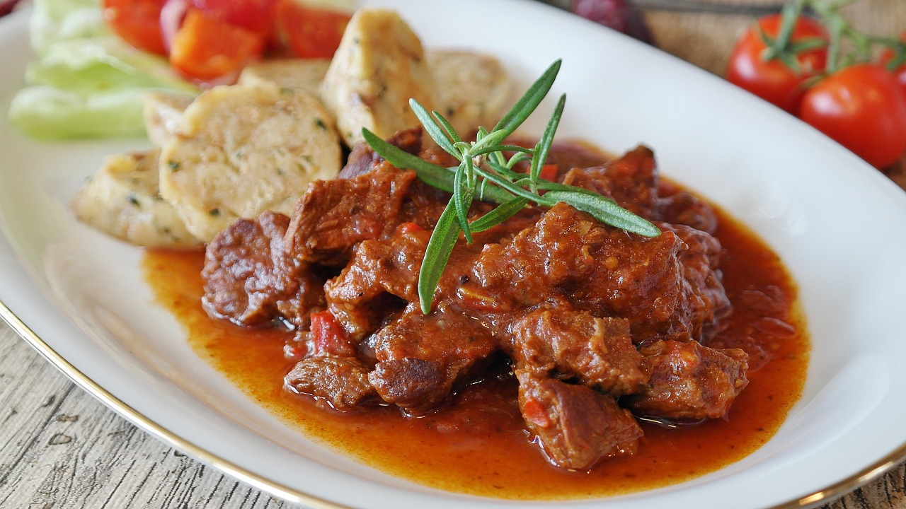

Klassissches Rindergulasch
| 750g Rindergulasch (in mundgerechte Stücke geschnitten) |
| 2 Zwiebeln, fein gehackt |
| 2 Knoblauchzehen, gehackt |
| 2 EL Tomatenmark |
| 2 EL Paprikapulver (edelsüß) |
| 2 EL Öl |
| 2 Lorbeerblätter |
| 1 TL Kümmel |
| 400ml Rinderbrühe |
| Salz und Pfeffer nach Geschmack |
Zubereitung
Das Rindergulasch mit Salz und Pfeffer würzen. Das Öl in einem großen Schmortopf erhitzen. Das Fleisch in kleinen Portionen anbraten, bis es rundherum braun ist. Das angebratene Fleisch beiseite stellen. In derselben Pfanne die gehackten Zwiebeln glasig anbraten. Den Knoblauch hinzufügen und kurz mitbraten. Das Tomatenmark unterrühren und kurz anschwitzen. Dann das Paprikapulver hinzufügen und alles gut vermengen. Das angebratene Fleisch wieder in den Topf geben. Kümmel dazugeben und alles gut vermengen. Mit Rinderbrühe ablöschen und die Lorbeerblätter hinzufügen. Den Topf abdecken und das Gulasch bei niedriger Hitze etwa 2 bis 2,5 Stunden schmoren lassen, bis das Fleisch zart ist. Gelegentlich umrühren und bei Bedarf mehr Brühe hinzufügen. Das Gulasch abschmecken und nach Bedarf mit Salz und Pfeffer würzen. Mit Beilagen wie Kartoffeln, Nudeln oder Brot servieren. Genieße dein selbstgemachtes Rindergulasch!
Rezept erstellt von
 Jonas
Jonas